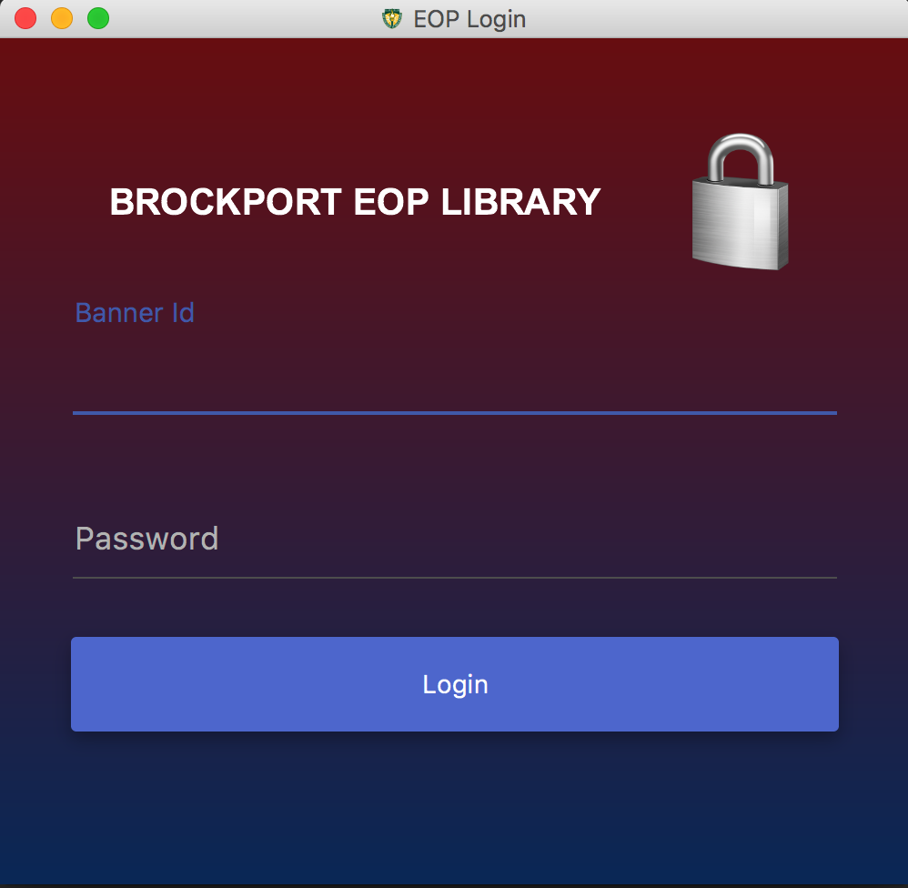

Portfolio

Library System (School Project) - Spring 2017
A group project for our Object Oriented Software Development class. We were required to develop a system which allowed libary administrators to create and modify books, workers and student borrowers. Also, the system alloed for checking in and checking out of books. The system supported internalization(French and English). I worked as the main developer and designer.
Trafex (Personal Project) - January 2017 to Present
A mobile application which allows students to display books that they wish to buy, sell or exchange with other student on campus. The goal of this application is to give previous students the chance to gain the maximum amount money from their textbooks and more importantly give advice to new students about the course. I am currently working as the developer and designer.

Evolution Radio (Freelancer)
A mobile application which allowed an internet radio station to reach its users. Users were given the opportunity to comment at any point in time in the app. This app was inspired by TuneIn. I worked as the developer and designer
Univent (Software Developer)
A mobile application which gathered all the sporting events that is occuring on RIT campus and displays them in a tiled format. Users could RSVP for events and see which of their friends or people they were following was going to an event. I worked as the software developer.
Vlipd (Project)
A project inspired by snapchat. This mobile application gave users the ability to record videos and share them with friends. Friends were also given the opportunity to add on to videos that was shared with them, generating a collaboratively created longer video. I worked as developer.